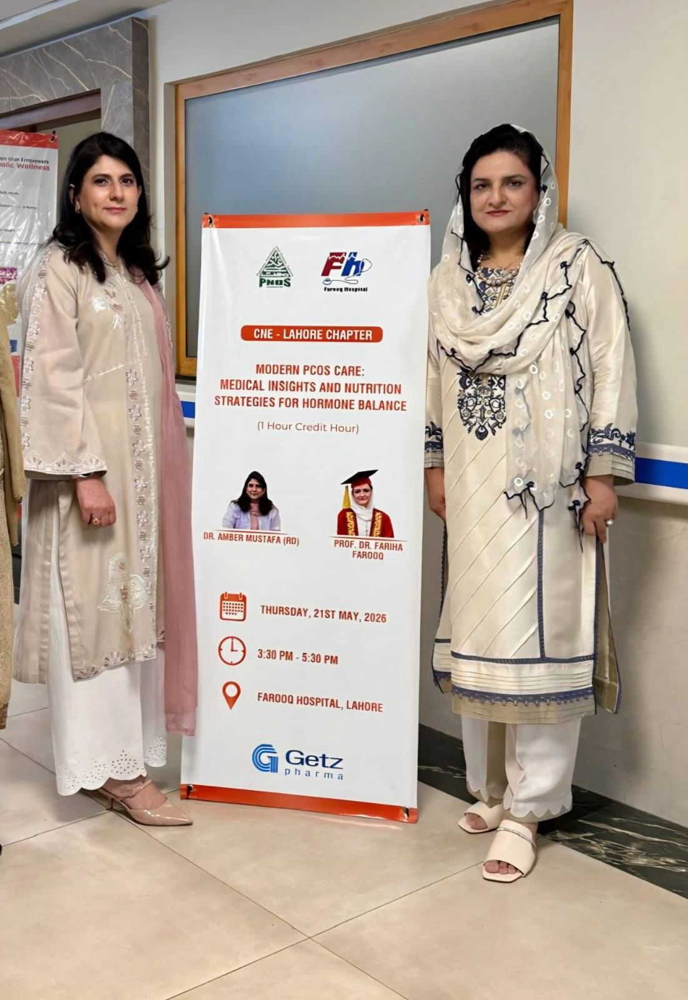
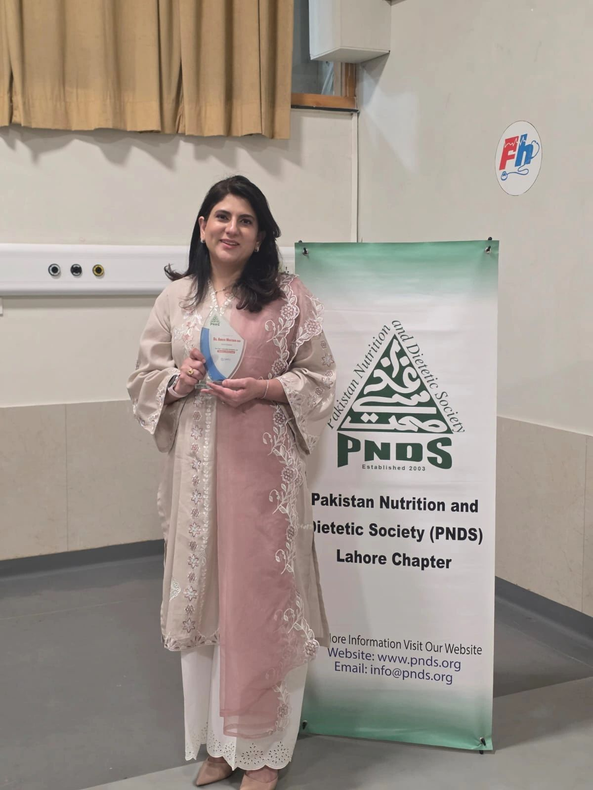
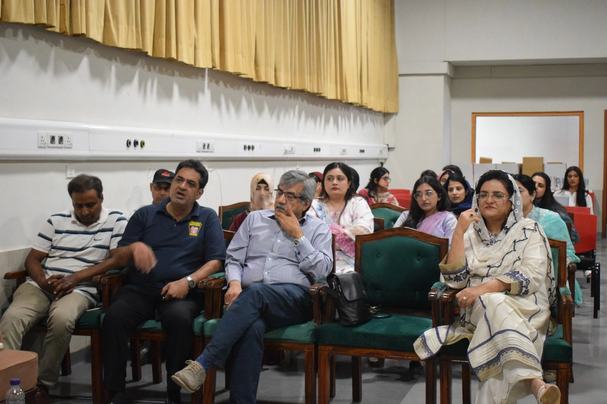
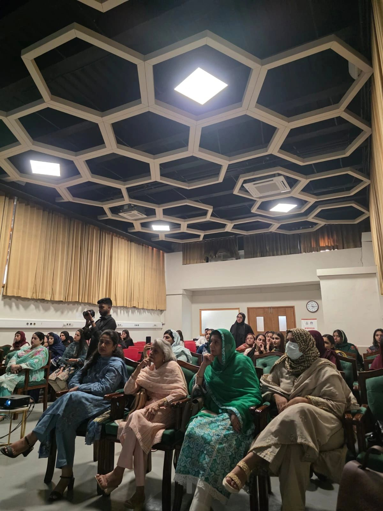

Date: 21 May 2026, 3:30 PM – 5:30 PM
Location: Farooq Hospital, DHA, Lahore
Organization: Pakistan Nutrition & Dietetic Society (PNDS), Lahore Chapter — supported by Getz Pharma
Presenters: Amber Mustafa, RD (Clinical Dietitian, Farooq Hospital DHA) and Prof. Dr. Fariha Farooq (Consultant Obstetrician & Gynaecologist), with panelist Dr. Mansoor Adil (Consultant Endocrinology & Diabetes)
As CNE Chair for the PNDS Lahore Chapter, I organised and co-presented this one-hour continuing nutrition education session at Farooq Hospital — bringing together the medical and nutrition perspectives on a condition that affects a huge number of women in Pakistan, under its newly proposed name.
A name change with real clinical meaning
Earlier in 2026, an international consensus proposed renaming Polycystic Ovary Syndrome to Polyendocrine Metabolic Ovarian Syndrome (PMOS) — a shift that puts metabolic health (insulin resistance, inflammation, weight) on equal footing with the reproductive features the condition was originally named for. This session opened by unpacking what that means in practice for both clinicians and patients.

Nutrition strategies for hormone-related health outcomes
On the dietitian's side, I walked attendees through four practical pillars for PCOS/PMOS nutrition care:
- Stabilise insulin signals — low-glycemic-index, high-fibre carbohydrates, pairing starches with protein, vegetables and unsaturated fats, and reducing sugary drinks.
- Support hormone balance — adequate protein intake and attention to vitamin D, iron and B12 status.
- Lower inflammatory load — Mediterranean/DASH-style eating patterns: colourful plants, legumes, fish, poultry, eggs, curd/yogurt where tolerated, and fewer ultra-processed foods.
- Protect menstrual and mental health — a weight-inclusive approach with attention to stress and sleep, not just the number on the scale.
The clinical side
Prof. Dr. Fariha Farooq and Dr. Mansoor Adil rounded out the session from the medical side — covering how clinicians monitor PCOS/PMOS over time: menstrual cycle regularity, skin and hair changes, cravings, blood pressure, lipid profile, and HbA1c/OGTT for insulin resistance. Together, the session gave attendees — many of them dietitians and allied health professionals from across Lahore — a fuller picture of how nutrition and medical management work together for PCOS/PMOS.

It was an honour to be recognised by the PNDS Lahore Chapter for organising and presenting this session — and even more rewarding to see a full room of healthcare professionals engaged in a topic that touches so many of the patients we see every day.



Interested in nutrition support for PCOS/PMOS, insulin resistance, or hormonal health? Book a consultation.